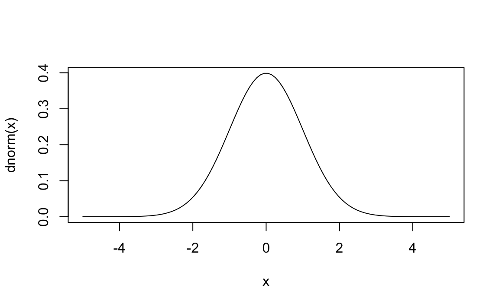
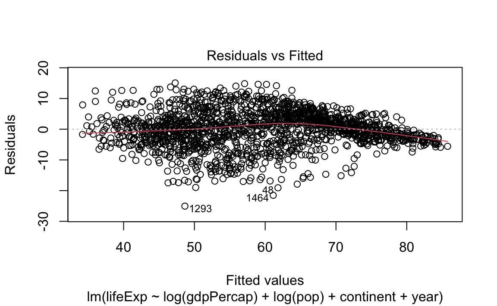
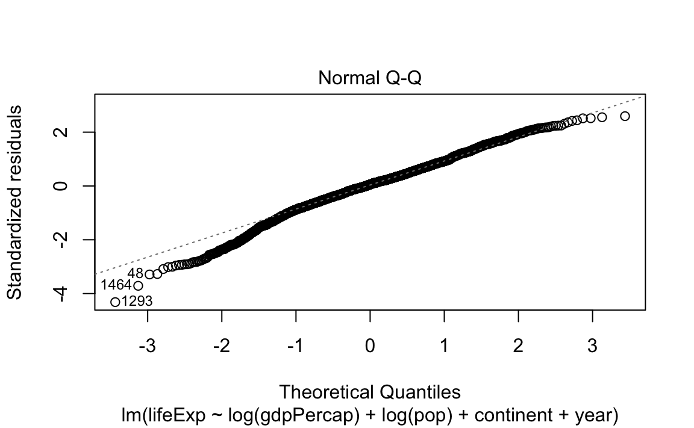
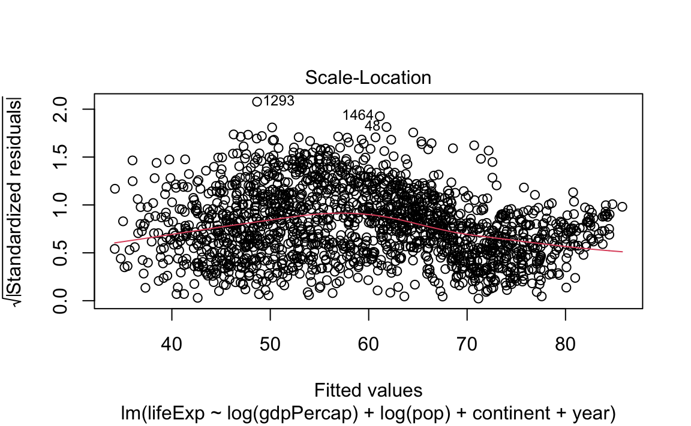
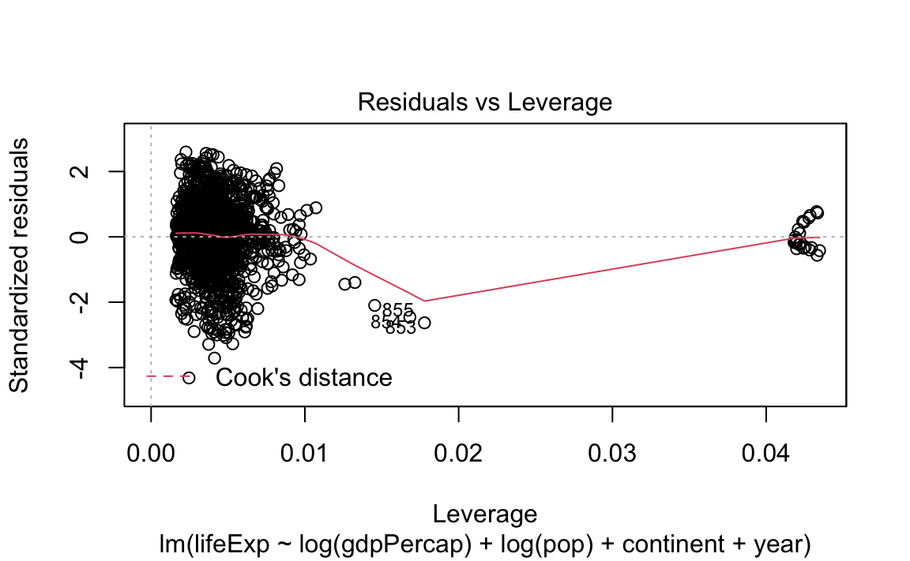

Chapter 13 Statistical Inferences
# setup
library(gapminder)
gap <- gapminder13.1 Statistical Distributions
Since R was developed by statisticians, it handles distributions and simulation seamlessly.
All commonly-used distributions have functions in R. Each distribution has a family of functions:
d- Probability density/mass function, e.g.,dnorm()r- Generate a random value, e.g.,rnorm()p- Cumulative distribution function, e.g.,pnorm()q- Quantile function (inverse CDF), e.g.,qnorm()
Let's see some of these functions in action with the normal distribution (mean 0, standard deviation 1):
dnorm(1.96) # Probability density of 1.96 from the normal distribution
#> [1] 0.0584
rnorm(1:10) # Get 10 random values from the normal distribution
#> [1] -1.40004 0.25532 -2.43726 -0.00557 0.62155 1.14841 -1.82182 -0.24733
#> [9] -0.24420 -0.28271
pnorm(1.96) # Cumulative distribution function
#> [1] 0.975
qnorm(.975) # Inverse cumulative distribution function
#> [1] 1.96We can also use these functions on other distributions:
rnorm()# Normal distributionrunif()# Uniform distributionrbinom()# Binomial distributionrpois()# Poisson distributionrbeta()# Beta distributionrgamma()# Gamma distributionrt()# Student t distributionrchisq(). # Chi-squared distribution
rbinom(0:10, size = 10, prob = 0.3)
#> [1] 2 4 4 2 6 4 1 3 4 4 1
dt(5, df = 1)
#> [1] 0.0122
x <- seq(-5, 5, length = 100)
plot(x, dnorm(x), type = 'l')
13.1.1 Sampling and Simulation
We can draw a sample with or without replacement with sample.
sample(1:nrow(gap), 20, replace = FALSE)
#> [1] 447 1284 752 674 1699 1241 726 1579 1568 1094 265 150 1023 1290 1440
#> [16] 117 930 1553 180 1208dplyr has a helpful select_n function that samples rows of a dataframe.
small <- sample_n(gap, 20)
nrow(small)
#> [1] 20Here's an example of some code that would be part of a bootstrap:
gap <- read.csv("data/gapminder-FiveYearData.csv", stringsAsFactors = F)
# Actual mean
mean(gap$lifeExp, na.rm = TRUE)
#> [1] 59.5
# Here's a bootstrap sample:
smp <- sample_n(gap, size = nrow(gap), replace = TRUE)
mean(smp$lifeExp, na.rm = TRUE)
#> [1] 59.413.1.2 Random Seeds
A few key facts about generating random numbers:
- Random numbers on a computer are pseudo-random; they are generated deterministically from a very, very, very long sequence that repeats.
- The seed determines where you are in that sequence.
To replicate any work involving random numbers, make sure to set the seed first. The seed can be arbitrary -- pick your favorite number.
set.seed(1)
vals <- sample(1:nrow(gap), 10)
vals
#> [1] 1017 679 129 930 1533 471 299 270 1211 1331
vals <- sample(1:nrow(gap), 10)
vals
#> [1] 597 1301 1518 330 1615 37 1129 729 878 485
set.seed(1)
vals <- sample(1:nrow(gap), 10)
vals
#> [1] 1017 679 129 930 1533 471 299 270 1211 133113.1.3 Challenges
Challenge 1.
Generate 100 random Poisson values with a population mean of 5. How close is the mean of those 100 values to the value of 5?
Challenge 2.
What is the 95th percentile of a chi-square distribution with 1 degree of freedom?
Challenge 3.
What is the probability of getting a value greater than 5 if you draw from a standard normal distribution? What about a t distribution with 1 degree of freedom?
13.2 Inferences and Regressions
Once we have imported our data, summarized it, carried out group-wise operations, and perhaps reshaped it, we may also want to attempt causal inference.
This often requires doing the following:
- Carrying out Classical Hypothesis Tests
- Estimating Regressions
# Setup
library(gapminder)
gap <- gapminder13.2.1 Statistical Tests
Let's say we are interested in whether the life expectancy in 1967 is different than in 1977.
# Pull out life expectancy by different years
life.exp.1967 <- gap$lifeExp[gap$year==1967]
life.exp.1977 <- gap$lifeExp[gap$year==1977]One can test for differences in distributions in either:
- Their means using t-tests:
# t test of means
t.test(x = life.exp.1967, y = life.exp.1977)
#>
#> Welch Two Sample t-test
#>
#> data: life.exp.1967 and life.exp.1977
#> t = -3, df = 281, p-value = 0.005
#> alternative hypothesis: true difference in means is not equal to 0
#> 95 percent confidence interval:
#> -6.57 -1.21
#> sample estimates:
#> mean of x mean of y
#> 55.7 59.6- Their entire distributions using ks-tests:
# ks tests of distributions
ks.test(x = life.exp.1967, y = life.exp.1977)
#> Warning in ks.test(x = life.exp.1967, y = life.exp.1977): p-value will be
#> approximate in the presence of ties
#>
#> Two-sample Kolmogorov-Smirnov test
#>
#> data: life.exp.1967 and life.exp.1977
#> D = 0.2, p-value = 0.008
#> alternative hypothesis: two-sided13.2.2 Regressions and Linear Models
Running regressions in R is generally straightforward. There are two basic, catch-all regression functions in R:
glmfits a generalized linear model with your choice of family/link function (Gaussian, logit, Poisson, etc.).lmis just a standard linear regression (equivalent toglmwithfamily = gaussian(link = "identity")).
The basic glm call looks something like this:
glm(formula = y ~ x1 + x2 + x3 + ..., family = familyname(link = "linkname"), data = )There are a bunch of families and links to use (?family for a full list), but some essentials are: binomial(link = "logit"), gaussian(link = "identity"), and poisson(link = "log").
If you are using lm, the call looks the same but without the family argument.
- Example: Suppose we want to regress the life expectency on the GDP per capita and the population, as well as the continent and the year. The
lmcall would be something like this:
reg <- lm(formula = lifeExp ~ log(gdpPercap) + log(pop) + continent + year, data = gap)Missing values
Missing values obviously cannot convey any information about the relationship between the variables. Most modeling functions will drop any rows that contain missing values.
13.2.3 Regression Output
When we store this regression in an object, we get access to several items of interest:
- All components contained in the regression output:
names(reg)
#> [1] "coefficients" "residuals" "effects" "rank"
#> [5] "fitted.values" "assign" "qr" "df.residual"
#> [9] "contrasts" "xlevels" "call" "terms"
#> [13] "model"- Regression coefficients:
reg$coefficients
#> (Intercept) log(gdpPercap) log(pop) continentAmericas
#> -460.813 5.076 0.153 8.745
#> continentAsia continentEurope continentOceania year
#> 6.825 12.281 12.540 0.238- Regression degrees of freedom:
reg$df.residual
#> [1] 1696- Standard (diagnostic) plots for a regression:
plot(reg)
R also has a helpful summary method for regression objects:
summary(reg)
#>
#> Call:
#> lm(formula = lifeExp ~ log(gdpPercap) + log(pop) + continent +
#> year, data = gap)
#>
#> Residuals:
#> Min 1Q Median 3Q Max
#> -25.057 -3.286 0.329 3.706 15.065
#>
#> Coefficients:
#> Estimate Std. Error t value Pr(>|t|)
#> (Intercept) -4.61e+02 1.70e+01 -27.15 <2e-16 ***
#> log(gdpPercap) 5.08e+00 1.63e-01 31.19 <2e-16 ***
#> log(pop) 1.53e-01 9.67e-02 1.58 0.11
#> continentAmericas 8.75e+00 4.77e-01 18.35 <2e-16 ***
#> continentAsia 6.83e+00 4.23e-01 16.13 <2e-16 ***
#> continentEurope 1.23e+01 5.29e-01 23.20 <2e-16 ***
#> continentOceania 1.25e+01 1.28e+00 9.79 <2e-16 ***
#> year 2.38e-01 8.93e-03 26.61 <2e-16 ***
#> ---
#> Signif. codes: 0 '***' 0.001 '**' 0.01 '*' 0.05 '.' 0.1 ' ' 1
#>
#> Residual standard error: 5.81 on 1696 degrees of freedom
#> Multiple R-squared: 0.798, Adjusted R-squared: 0.798
#> F-statistic: 960 on 7 and 1696 DF, p-value: <2e-16We can also extract useful things from the summary object:
# Store summary method results
summ_reg <- summary(reg)
# View summary method results objects
objects(summ_reg)
#> [1] "adj.r.squared" "aliased" "call" "coefficients"
#> [5] "cov.unscaled" "df" "fstatistic" "r.squared"
#> [9] "residuals" "sigma" "terms"
# View table of coefficients
summ_reg$coefficients
#> Estimate Std. Error t value Pr(>|t|)
#> (Intercept) -460.813 16.97028 -27.15 3.96e-135
#> log(gdpPercap) 5.076 0.16272 31.19 3.37e-169
#> log(pop) 0.153 0.09668 1.58 1.14e-01
#> continentAmericas 8.745 0.47660 18.35 9.61e-69
#> continentAsia 6.825 0.42320 16.13 1.49e-54
#> continentEurope 12.281 0.52924 23.20 1.12e-103
#> continentOceania 12.540 1.28114 9.79 4.80e-22
#> year 0.238 0.00893 26.61 1.06e-13013.2.4 Interactions
There are also some useful shortcuts for regressing on interaction terms:
x1:x2interacts all terms inx1with all terms inx2:
mod.1 <- lm(lifeExp ~ log(gdpPercap) + log(pop) + continent:factor(year), data = gap)
summary(mod.1)
#>
#> Call:
#> lm(formula = lifeExp ~ log(gdpPercap) + log(pop) + continent:factor(year),
#> data = gap)
#>
#> Residuals:
#> Min 1Q Median 3Q Max
#> -26.568 -2.553 0.004 2.915 15.567
#>
#> Coefficients: (1 not defined because of singularities)
#> Estimate Std. Error t value Pr(>|t|)
#> (Intercept) 27.1838 4.6849 5.80 7.8e-09 ***
#> log(gdpPercap) 5.0795 0.1605 31.65 < 2e-16 ***
#> log(pop) 0.0789 0.0943 0.84 0.40251
#> continentAfrica:factor(year)1952 -24.1425 4.1125 -5.87 5.2e-09 ***
#> continentAmericas:factor(year)1952 -16.4465 4.1663 -3.95 8.2e-05 ***
#> continentAsia:factor(year)1952 -19.3347 4.1408 -4.67 3.3e-06 ***
#> continentEurope:factor(year)1952 -7.0918 4.1352 -1.71 0.08654 .
#> continentOceania:factor(year)1952 -6.0635 5.6511 -1.07 0.28344
#> continentAfrica:factor(year)1957 -22.4964 4.1098 -5.47 5.1e-08 ***
#> continentAmericas:factor(year)1957 -14.3673 4.1643 -3.45 0.00057 ***
#> continentAsia:factor(year)1957 -17.1743 4.1375 -4.15 3.5e-05 ***
#> continentEurope:factor(year)1957 -5.9094 4.1327 -1.43 0.15293
#> continentOceania:factor(year)1957 -5.6300 5.6503 -1.00 0.31921
#> continentAfrica:factor(year)1962 -21.0139 4.1069 -5.12 3.5e-07 ***
#> continentAmericas:factor(year)1962 -12.3135 4.1630 -2.96 0.00314 **
#> continentAsia:factor(year)1962 -15.5626 4.1351 -3.76 0.00017 ***
#> continentEurope:factor(year)1962 -5.0542 4.1308 -1.22 0.22130
#> continentOceania:factor(year)1962 -5.3122 5.6498 -0.94 0.34723
#> continentAfrica:factor(year)1967 -19.7034 4.1035 -4.80 1.7e-06 ***
#> continentAmericas:factor(year)1967 -10.9324 4.1613 -2.63 0.00869 **
#> continentAsia:factor(year)1967 -13.1569 4.1327 -3.18 0.00148 **
#> continentEurope:factor(year)1967 -4.9134 4.1291 -1.19 0.23423
#> continentOceania:factor(year)1967 -5.7712 5.6492 -1.02 0.30712
#> continentAfrica:factor(year)1972 -18.1469 4.1007 -4.43 1.0e-05 ***
#> continentAmericas:factor(year)1972 -9.6537 4.1595 -2.32 0.02042 *
#> continentAsia:factor(year)1972 -11.6014 4.1293 -2.81 0.00502 **
#> continentEurope:factor(year)1972 -4.9763 4.1275 -1.21 0.22813
#> continentOceania:factor(year)1972 -5.8094 5.6487 -1.03 0.30389
#> continentAfrica:factor(year)1977 -16.1848 4.0996 -3.95 8.2e-05 ***
#> continentAmericas:factor(year)1977 -8.3382 4.1580 -2.01 0.04509 *
#> continentAsia:factor(year)1977 -10.1220 4.1270 -2.45 0.01428 *
#> continentEurope:factor(year)1977 -4.5523 4.1267 -1.10 0.27013
#> continentOceania:factor(year)1977 -5.1232 5.6485 -0.91 0.36454
#> continentAfrica:factor(year)1982 -14.1933 4.0990 -3.46 0.00055 ***
#> continentAmericas:factor(year)1982 -6.5921 4.1577 -1.59 0.11304
#> continentAsia:factor(year)1982 -7.6001 4.1257 -1.84 0.06564 .
#> continentEurope:factor(year)1982 -4.1185 4.1262 -1.00 0.31837
#> continentOceania:factor(year)1982 -4.0553 5.6483 -0.72 0.47288
#> continentAfrica:factor(year)1987 -12.1850 4.0995 -2.97 0.00300 **
#> continentAmericas:factor(year)1987 -4.7157 4.1577 -1.13 0.25687
#> continentAsia:factor(year)1987 -5.6914 4.1249 -1.38 0.16785
#> continentEurope:factor(year)1987 -3.7298 4.1258 -0.90 0.36613
#> continentOceania:factor(year)1987 -3.5164 5.6480 -0.62 0.53364
#> continentAfrica:factor(year)1992 -11.8028 4.0994 -2.88 0.00404 **
#> continentAmericas:factor(year)1992 -3.2855 4.1575 -0.79 0.42949
#> continentAsia:factor(year)1992 -4.3823 4.1241 -1.06 0.28811
#> continentEurope:factor(year)1992 -2.5151 4.1262 -0.61 0.54225
#> continentOceania:factor(year)1992 -1.9804 5.6480 -0.35 0.72590
#> continentAfrica:factor(year)1997 -11.9577 4.0986 -2.92 0.00358 **
#> continentAmericas:factor(year)1997 -2.1611 4.1566 -0.52 0.60319
#> continentAsia:factor(year)1997 -3.5016 4.1228 -0.85 0.39583
#> continentEurope:factor(year)1997 -2.0843 4.1256 -0.51 0.61348
#> continentOceania:factor(year)1997 -1.4478 5.6478 -0.26 0.79771
#> continentAfrica:factor(year)2002 -12.5237 4.0972 -3.06 0.00227 **
#> continentAmericas:factor(year)2002 -0.9898 4.1564 -0.24 0.81180
#> continentAsia:factor(year)2002 -2.6798 4.1221 -0.65 0.51571
#> continentEurope:factor(year)2002 -1.5734 4.1252 -0.38 0.70294
#> continentOceania:factor(year)2002 -0.4735 5.6477 -0.08 0.93320
#> continentAfrica:factor(year)2007 -11.6568 4.0948 -2.85 0.00447 **
#> continentAmericas:factor(year)2007 -0.6931 4.1550 -0.17 0.86754
#> continentAsia:factor(year)2007 -2.2008 4.1202 -0.53 0.59332
#> continentEurope:factor(year)2007 -1.5284 4.1247 -0.37 0.71102
#> continentOceania:factor(year)2007 NA NA NA NA
#> ---
#> Signif. codes: 0 '***' 0.001 '**' 0.01 '*' 0.05 '.' 0.1 ' ' 1
#>
#> Residual standard error: 5.65 on 1642 degrees of freedom
#> Multiple R-squared: 0.816, Adjusted R-squared: 0.809
#> F-statistic: 119 on 61 and 1642 DF, p-value: <2e-16x1*x2produces the cross ofx1andx2, orx1+x2+x1:x2:
mod.2 <- lm(lifeExp ~ log(gdpPercap) + log(pop) + continent*factor(year), data = gap)
summary(mod.2)
#>
#> Call:
#> lm(formula = lifeExp ~ log(gdpPercap) + log(pop) + continent *
#> factor(year), data = gap)
#>
#> Residuals:
#> Min 1Q Median 3Q Max
#> -26.568 -2.553 0.004 2.915 15.567
#>
#> Coefficients:
#> Estimate Std. Error t value Pr(>|t|)
#> (Intercept) 3.0413 2.0741 1.47 0.14275
#> log(gdpPercap) 5.0795 0.1605 31.65 < 2e-16 ***
#> log(pop) 0.0789 0.0943 0.84 0.40251
#> continentAmericas 7.6960 1.3932 5.52 3.9e-08 ***
#> continentAsia 4.8078 1.2657 3.80 0.00015 ***
#> continentEurope 17.0508 1.3295 12.83 < 2e-16 ***
#> continentOceania 18.0790 4.0890 4.42 1.0e-05 ***
#> factor(year)1957 1.6461 1.1078 1.49 0.13747
#> factor(year)1962 3.1286 1.1084 2.82 0.00482 **
#> factor(year)1967 4.4392 1.1097 4.00 6.6e-05 ***
#> factor(year)1972 5.9956 1.1113 5.39 7.9e-08 ***
#> factor(year)1977 7.9578 1.1124 7.15 1.3e-12 ***
#> factor(year)1982 9.9492 1.1134 8.94 < 2e-16 ***
#> factor(year)1987 11.9575 1.1138 10.74 < 2e-16 ***
#> factor(year)1992 12.3398 1.1146 11.07 < 2e-16 ***
#> factor(year)1997 12.1848 1.1161 10.92 < 2e-16 ***
#> factor(year)2002 11.6188 1.1181 10.39 < 2e-16 ***
#> factor(year)2007 12.4857 1.1212 11.14 < 2e-16 ***
#> continentAmericas:factor(year)1957 0.4330 1.9438 0.22 0.82375
#> continentAsia:factor(year)1957 0.5142 1.7776 0.29 0.77241
#> continentEurope:factor(year)1957 -0.4638 1.8313 -0.25 0.80010
#> continentOceania:factor(year)1957 -1.2126 5.7552 -0.21 0.83315
#> continentAmericas:factor(year)1962 1.0043 1.9438 0.52 0.60546
#> continentAsia:factor(year)1962 0.6435 1.7777 0.36 0.71741
#> continentEurope:factor(year)1962 -1.0911 1.8315 -0.60 0.55142
#> continentOceania:factor(year)1962 -2.3774 5.7552 -0.41 0.67960
#> continentAmericas:factor(year)1967 1.0750 1.9438 0.55 0.58033
#> continentAsia:factor(year)1967 1.7387 1.7777 0.98 0.32819
#> continentEurope:factor(year)1967 -2.2608 1.8317 -1.23 0.21728
#> continentOceania:factor(year)1967 -4.1468 5.7552 -0.72 0.47130
#> continentAmericas:factor(year)1972 0.7972 1.9438 0.41 0.68176
#> continentAsia:factor(year)1972 1.7377 1.7779 0.98 0.32851
#> continentEurope:factor(year)1972 -3.8801 1.8322 -2.12 0.03435 *
#> continentOceania:factor(year)1972 -5.7415 5.7552 -1.00 0.31862
#> continentAmericas:factor(year)1977 0.1505 1.9439 0.08 0.93828
#> continentAsia:factor(year)1977 1.2549 1.7784 0.71 0.48050
#> continentEurope:factor(year)1977 -5.4183 1.8329 -2.96 0.00316 **
#> continentOceania:factor(year)1977 -7.0175 5.7553 -1.22 0.22290
#> continentAmericas:factor(year)1982 -0.0948 1.9439 -0.05 0.96110
#> continentAsia:factor(year)1982 1.7854 1.7788 1.00 0.31567
#> continentEurope:factor(year)1982 -6.9759 1.8336 -3.80 0.00015 ***
#> continentOceania:factor(year)1982 -7.9409 5.7553 -1.38 0.16785
#> continentAmericas:factor(year)1987 -0.2267 1.9440 -0.12 0.90720
#> continentAsia:factor(year)1987 1.6858 1.7796 0.95 0.34363
#> continentEurope:factor(year)1987 -8.5955 1.8350 -4.68 3.0e-06 ***
#> continentOceania:factor(year)1987 -9.4104 5.7554 -1.64 0.10223
#> continentAmericas:factor(year)1992 0.8213 1.9441 0.42 0.67276
#> continentAsia:factor(year)1992 2.6127 1.7803 1.47 0.14243
#> continentEurope:factor(year)1992 -7.7631 1.8346 -4.23 2.5e-05 ***
#> continentOceania:factor(year)1992 -8.2567 5.7555 -1.43 0.15160
#> continentAmericas:factor(year)1997 2.1006 1.9443 1.08 0.28012
#> continentAsia:factor(year)1997 3.6483 1.7812 2.05 0.04070 *
#> continentEurope:factor(year)1997 -7.1773 1.8358 -3.91 9.6e-05 ***
#> continentOceania:factor(year)1997 -7.5691 5.7557 -1.32 0.18867
#> continentAmericas:factor(year)2002 3.8379 1.9442 1.97 0.04854 *
#> continentAsia:factor(year)2002 5.0361 1.7814 2.83 0.00476 **
#> continentEurope:factor(year)2002 -6.1005 1.8369 -3.32 0.00092 ***
#> continentOceania:factor(year)2002 -6.0287 5.7558 -1.05 0.29506
#> continentAmericas:factor(year)2007 3.2677 1.9444 1.68 0.09303 .
#> continentAsia:factor(year)2007 4.6483 1.7823 2.61 0.00919 **
#> continentEurope:factor(year)2007 -6.9223 1.8378 -3.77 0.00017 ***
#> continentOceania:factor(year)2007 -6.4222 5.7558 -1.12 0.26468
#> ---
#> Signif. codes: 0 '***' 0.001 '**' 0.01 '*' 0.05 '.' 0.1 ' ' 1
#>
#> Residual standard error: 5.65 on 1642 degrees of freedom
#> Multiple R-squared: 0.816, Adjusted R-squared: 0.809
#> F-statistic: 119 on 61 and 1642 DF, p-value: <2e-16Note that we wrapped the year variable into a factor() function. By default, R breaks up our variables into their different factor levels (as it will do whenever your regressors have factor levels).
If your data are not factorized, you can tell lm/glm to factorize a variable (i.e., create dummy variables on the fly) by writing factor().
glm(formula = y ~ x1 + x2 + factor(x3), family = family(link = "link"),
data = )13.2.5 Formatting Regression Tables
Most papers report the results of regression analysis in some kind of table. Typically, this table includes the values of coefficients, standard errors, and significance levels from one or more models.
The stargazer package provides excellent tools to make and format regression tables automatically. It can also output summary statistics from a dataframe.
library(stargazer)
#>
#> Please cite as:
#> Hlavac, Marek (2018). stargazer: Well-Formatted Regression and Summary Statistics Tables.
#> R package version 5.2.2. https://CRAN.R-project.org/package=stargazer
stargazer(gap, type = "text")
#>
#> ===================================================
#> Statistic N Mean St. Dev. Min Pctl(25) Pctl(75) Max
#> ===================================================Let's say we want to report the results from three different models:
mod.1 <- lm(lifeExp ~ log(gdpPercap) + log(pop), data = gap)
mod.2 <- lm(lifeExp ~ log(gdpPercap) + log(pop) + continent, data = gap)
mod.3 <- lm(lifeExp ~ log(gdpPercap) + log(pop) + continent + year, data = gap)stargazer can produce well-formatted tables that hold regression analysis results from all these models side-by-side.
stargazer(mod.1, mod.2, mod.3, title = "Regression Results", type = "text")
#>
#> Regression Results
#> ===================================================================================================
#> Dependent variable:
#> -------------------------------------------------------------------------------
#> lifeExp
#> (1) (2) (3)
#> ---------------------------------------------------------------------------------------------------
#> log(gdpPercap) 8.340*** 6.590*** 5.080***
#> (0.143) (0.182) (0.163)
#>
#> log(pop) 1.280*** 0.866*** 0.153
#> (0.111) (0.111) (0.097)
#>
#> continentAmericas 6.170*** 8.740***
#> (0.555) (0.477)
#>
#> continentAsia 4.670*** 6.830***
#> (0.494) (0.423)
#>
#> continentEurope 8.560*** 12.300***
#> (0.608) (0.529)
#>
#> continentOceania 8.350*** 12.500***
#> (1.510) (1.280)
#>
#> year 0.238***
#> (0.009)
#>
#> Constant -28.800*** -12.000*** -461.000***
#> (2.080) (2.270) (17.000)
#>
#> ---------------------------------------------------------------------------------------------------
#> Observations 1,704 1,704 1,704
#> R2 0.677 0.714 0.798
#> Adjusted R2 0.677 0.713 0.798
#> Residual Std. Error 7.340 (df = 1701) 6.920 (df = 1697) 5.810 (df = 1696)
#> F Statistic 1,786.000*** (df = 2; 1701) 707.000*** (df = 6; 1697) 960.000*** (df = 7; 1696)
#> ===================================================================================================
#> Note: *p<0.1; **p<0.05; ***p<0.01Customization
stargazer is incredibly customizable. Let's say we wanted to
- Re-name our explanatory variables;
- Remove information on the "Constant";
- Only keep the number of observations from the summary statistics; and
- Style the table to look like those in the American Journal of Political Science.
stargazer(mod.1, mod.2, mod.3, title = "Regression Results", type = "text",
covariate.labels = c("GDP per capita, logged", "Population, logged", "Americas", "Asia", "Europe", "Oceania", "Year", "Constant"),
omit = "Constant",
keep.stat="n", style = "ajps")
#>
#> Regression Results
#> --------------------------------------------------
#> lifeExp
#> Model 1 Model 2 Model 3
#> --------------------------------------------------
#> GDP per capita, logged 8.340*** 6.590*** 5.080***
#> (0.143) (0.182) (0.163)
#> Population, logged 1.280*** 0.866*** 0.153
#> (0.111) (0.111) (0.097)
#> Americas 6.170*** 8.740***
#> (0.555) (0.477)
#> Asia 4.670*** 6.830***
#> (0.494) (0.423)
#> Europe 8.560*** 12.300***
#> (0.608) (0.529)
#> Oceania 8.350*** 12.500***
#> (1.510) (1.280)
#> Year 0.238***
#> (0.009)
#> N 1704 1704 1704
#> --------------------------------------------------
#> ***p < .01; **p < .05; *p < .1Check out ?stargazer to see more options.
Output Types
Once we like the look of our table, we can output/export it in a number of ways. The type argument specifies what output the command should produce. Possible values are:
"latex"for LaTeX code."html"for HTML code."text"for ASCII text output (what we used above).
Let's say we are using LaTeX to typeset our paper. We can output our regression table in LaTeX:
stargazer(mod.1, mod.2, mod.3, title = "Regression Results", type = "latex",
covariate.labels = c("GDP per capita, logged", "Population, logged", "Americas", "Asia", "Europe", "Oceania", "Year", "Constant"),
omit = "Constant",
keep.stat="n", style = "ajps")
#>
#> % Table created by stargazer v.5.2.2 by Marek Hlavac, Harvard University. E-mail: hlavac at fas.harvard.edu
#> % Date and time: Fri, Oct 02, 2020 - 11:55:48
#> \begin{table}[!htbp] \centering
#> \caption{Regression Results}
#> \label{}
#> \begin{tabular}{@{\extracolsep{5pt}}lccc}
#> \\[-1.8ex]\hline \\[-1.8ex]
#> \\[-1.8ex] & \multicolumn{3}{c}{\textbf{lifeExp}} \\
#> \\[-1.8ex] & \textbf{Model 1} & \textbf{Model 2} & \textbf{Model 3}\\
#> \hline \\[-1.8ex]
#> GDP per capita, logged & 8.340$^{***}$ & 6.590$^{***}$ & 5.080$^{***}$ \\
#> & (0.143) & (0.182) & (0.163) \\
#> Population, logged & 1.280$^{***}$ & 0.866$^{***}$ & 0.153 \\
#> & (0.111) & (0.111) & (0.097) \\
#> Americas & & 6.170$^{***}$ & 8.740$^{***}$ \\
#> & & (0.555) & (0.477) \\
#> Asia & & 4.670$^{***}$ & 6.830$^{***}$ \\
#> & & (0.494) & (0.423) \\
#> Europe & & 8.560$^{***}$ & 12.300$^{***}$ \\
#> & & (0.608) & (0.529) \\
#> Oceania & & 8.350$^{***}$ & 12.500$^{***}$ \\
#> & & (1.510) & (1.280) \\
#> Year & & & 0.238$^{***}$ \\
#> & & & (0.009) \\
#> N & 1704 & 1704 & 1704 \\
#> \hline \\[-1.8ex]
#> \multicolumn{4}{l}{$^{***}$p $<$ .01; $^{**}$p $<$ .05; $^{*}$p $<$ .1} \\
#> \end{tabular}
#> \end{table}To include the produced tables in our paper, we can simply insert this stargazer LaTeX output into the publication's TeX source.
Alternatively, you can use the out argument to save the output in a .tex or .txt file:
stargazer(mod.1, mod.2, mod.3, title = "Regression Results", type = "latex",
covariate.labels = c("GDP per capita, logged", "Population, logged", "Americas", "Asia", "Europe", "Oceania", "Year", "Constant"),
omit = "Constant",
keep.stat="n", style = "ajps",
out = "regression-table.txt")To include stargazer tables in Microsoft Word documents (e.g., .doc or .docx), use the following procedure:
- Use the
outargument to save output into an.htmlfile. - Open the resulting file in your web browser.
- Copy and paste the table from the web browser to your Microsoft Word document.
stargazer(mod.1, mod.2, mod.3, title = "Regression Results", type = "html",
covariate.labels = c("GDP per capita, logged", "Population, logged", "Americas", "Asia", "Europe", "Oceania", "Year", "Constant"),
omit = "Constant",
keep.stat="n", style = "ajps",
out = "regression-table.html")13.2.6 Challenges
Challenge 1.
Fit two linear regression models from the gapminder data where the outcome is lifeExp and the explanatory variables are log(pop), log(gdpPercap), and year. In one model, treat year as a numeric variable. In the other, factorize the year variable. How do you interpret each model?
Challenge 2.
Fit a logistic regression model where the outcome is whether lifeExp is greater than or less than 60 years, exploring the use of different predictors.
Challenge 3.
Using stargazer, format a table reporting the results from the three models you created above (two linear regressions and one logistic).